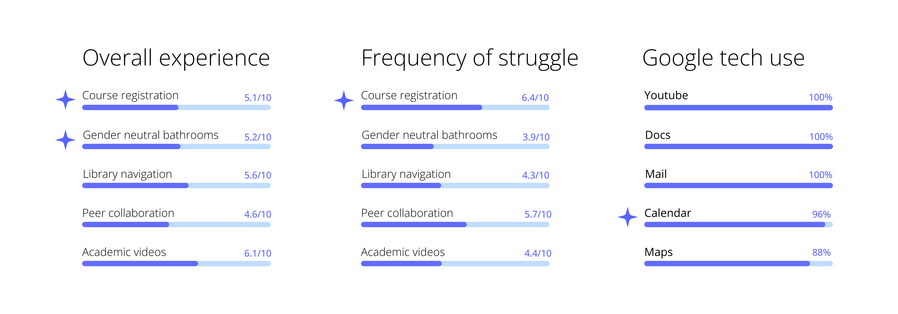
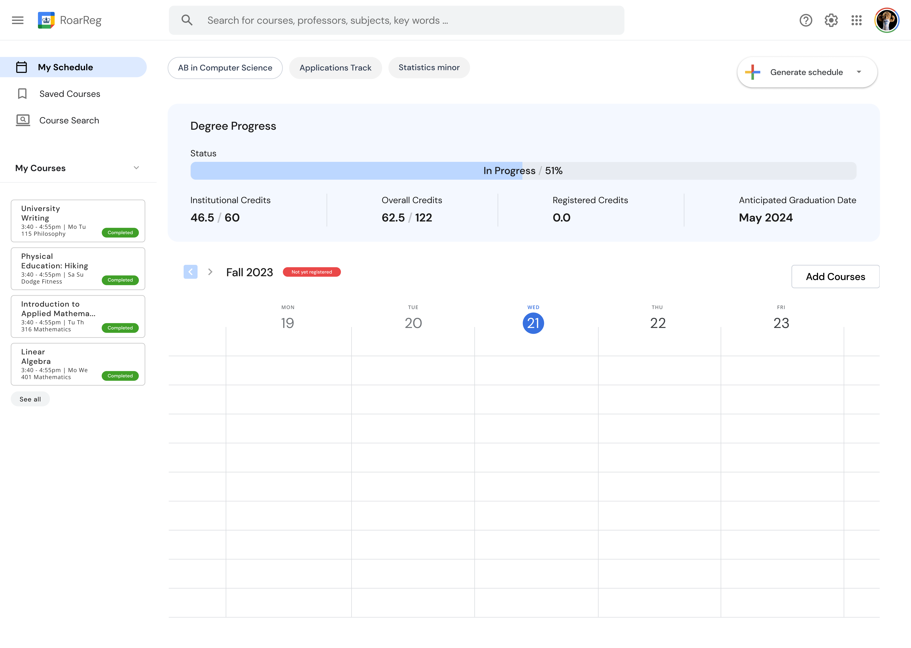

Overview
ProDesign is a 6-week design challenge hosted by Design at Columbia with mentorship from Google UX designers. The challenge asks
participants to improve aspects Columbia student life through design using Google technologies.
User research
Methods
We began with 6 initial focus areas: library navigation, finding gender neutral restrooms, course registration, collaboration in common areas, and finding course related videos.
Our initial user research was two-fold: quantitative research through a Google Form and qualitative research through open-ended interviews with Columbia students.
Quantitative research
We received 25 responses from a mix of CC, SEAS, and Barnard students.

Qualitative research
We found through our student interviews that the current registration process was an extremely emotional, frustrating, and anger inducing process. Students referred to it as "the most frustrating process in the world", "annoying", and "stupid". Specifically, they struggled with the lack of consolidation between SSOL (Columbia's registration platform), planning courses in accordance to their availabilities/schedule preferences, finding courses that fit specific degree requirements, and adding courses to their calendars.
Findings
Our research results suggested we use some aspects of Google Calendar as a means of making the registration process more consolidated and in accordance to student availabilities and degree requirements.
Low fidelity prototype
We drew inspiration from Google's pre-existing feature in Google Calendar, allowing users to mark windows of their availability.
This design aims to solve Columbia students' issues with academic planning by automating the registration process, as users only need to put in their preferred courses and availabilities, and the platform will generate potential schedules for the user to choose between.
This design aims to solve Columbia students' issues with academic planning by automating the registration process, as users only need to put in their preferred courses and availabilities, and the platform will generate potential schedules for the user to choose between.

Low fidelity prototyping/brainstorming, Goodnotes and FigJam
Medium fidelity prototype
In our medium fidelity prototypes, we continued to address registration problems with a dashboard with suggested courses, a course search page, and a schedule generation page.

Students can input their availabilities, courses, as well as preferred availabilities and courses, and credit range, with an option to add more preferences in "advanced settings".

They can then generate potential schedules based on their availabilities and preferences, and register for whichever they prefer.


As this is a Google technology, students then have the option to have their new courses added directly to their Google Calendar.

Students can search for courses by course name, professor, departments, or key words, which are matched through a tagging system.
They also have the option to filter by max occupancy, time, or what degree requirements a course may satisfy.

Dashboard
Dashboard, Figma prototype
Schedule generation
Students can input their availabilities, courses, as well as preferred availabilities and courses, and credit range, with an option to add more preferences in "advanced settings".
Schedule generation, Figma prototype
They can then generate potential schedules based on their availabilities and preferences, and register for whichever they prefer.
Potential schedules, Figma prototype
As this is a Google technology, students then have the option to have their new courses added directly to their Google Calendar.
Home calendar, Figma prototype
Course search
Students can search for courses by course name, professor, departments, or key words, which are matched through a tagging system.
They also have the option to filter by max occupancy, time, or what degree requirements a course may satisfy.
Feedback
Google UX
We presented our designs to Angel Njoku, a current Google User Experience Designer. She responded with the following feedback.
- Rethink the visual hierarchy of the dashboard. Think of common user journeys and how to implement these with a clear call to action
- Dashboard is too wordy and could help with more incorportation of color
- Need more clarity in what the tags mean
- Add ability to toggle between calendars shown on the schedule generation screen
Users
- Some visual indication of how far along a student is with their requirements would be useful
- Tags are confusing and too small
- Overall seems useful
Final designs
Dashboard
Improved UI design, added progress bar, degree requirement progress stats, current and previous courses, current student schedule.

Dashboard, Figma prototype
Course search
Added color-coded tags, ability to add to a "course bucket" from which students can "checkout" to generate potential schedules.

Course search, GIF of Figma prototype
Schedule generation
Polished UI design, added calendar toggle functionality, and added advanced settings.

Schedule generation, GIF of Figma prototype
Schedule registration
Polished UI design, added schedule stats, added course information, and course drop flow.

Potential schedules, GIF of Figma prototype
Stay tuned as we finalize this design challenge!
Thank you for visiting :)
Designed and coded by Rachel Xuerui Michelson
↑
Designed and coded by Rachel Xuerui Michelson